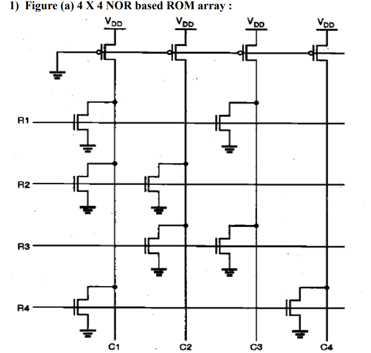
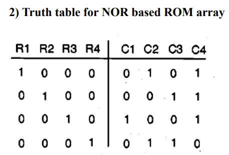
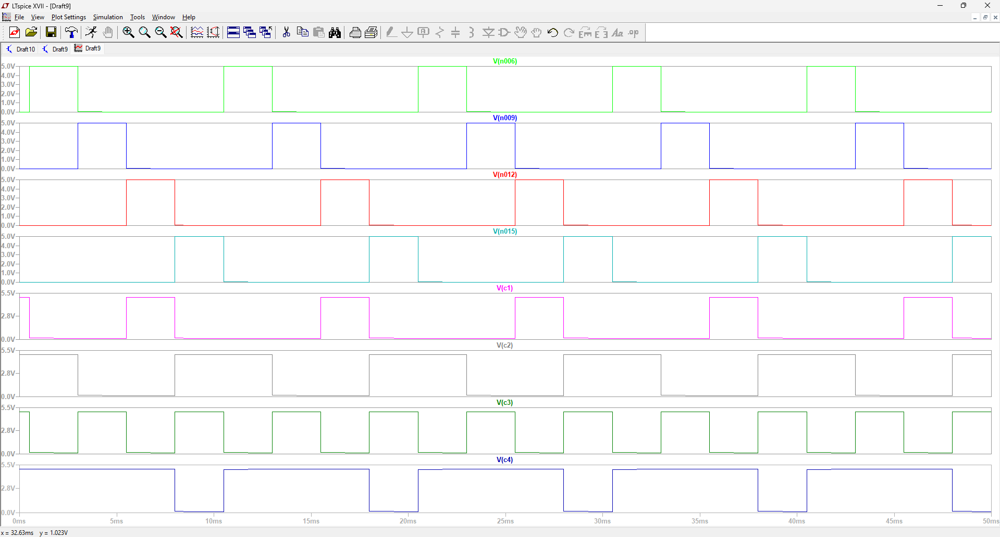
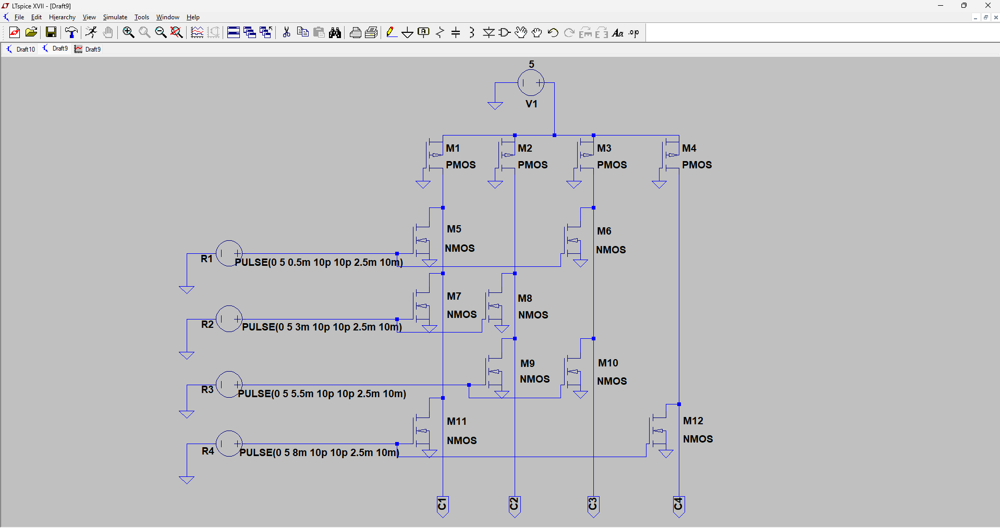

Experiment No. 08
Name-Adil Arkate Roll No- 224A7064
Batch- B3 Date- 15/09/2026
AIM: To design NOR based ROM memory
OBJECTIVE: To design NOR based memory array
SOFTWARE: LT Spice
THEORY:
Read-Only Memory (ROM) Circuits: The read-only memory array can also be seen as a simple combinational Boolean network which produces a specified output value for each input combination, i.e., for each address. Thus, storing binary information at a particular address location can be achieved by the presence or absence of a data path from the selected row (word line) to the selected column (bit line), which is equivalent to the presence or absence of a device at that location.

4-bit x 4-bit NOR ROM array: Consider first the 4-bit x4-bit memory array shown in Fig (a), each column consists of a pseudo-nMOS NOR gate driven by some of the row signals, i.e., the word lines. Here only one word line is activated (selected) at a time by raising its voltage to VDD, while all other rows are held at a low voltage level. If an active transistor exists at the cross point of a column and the selected row, the column voltage is pulled down to the logic low level by that transistor. If no active transistor exists at the cross point, the column voltage is pulled high by the pMOS load device. Thus, a logic " 1 "-bit is stored as the absence of an active transistor, while the logic “-bit is stored as the presence of an active transistor at the crosspoint. To reduce static power consumption, the pMOS load transistors in the ROM array shown in Fig. (a) can also be driven by a periodic precharge signal, resulting in a dynamic ROM.
PROCEDURE:
Open LT Spice
In Files Menu---click on new schematics
Go to Components---Select each required component----do connections.
Simulate edit command: add required voltage level
Simulate the schematic --- in Tools menu ----go to Simulation(spice)--- click on Write Spice deck.
LT Spice window gets opened. There Right click on the black window---click on add trace.
To see fall and rise time--- in Edit menu ---click on SPICE error log.


OUTPUT:CONCLUSION: The 4-bit × 4-bit NOR-based ROM memory array was successfully designed and simulated using LTspice. The simulation verified that the stored data is read correctly according to the selected word line. A logic 1 is represented by the absence of a pull-down transistor, while a logic 0 is represented by its presence. Thus, the NOR ROM array demonstrates reliable read-only data storage and retrieval using a simple transistor-based memory structure.